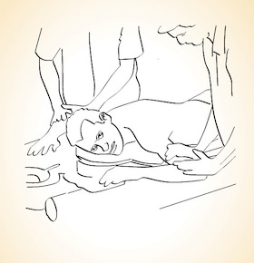

Abhyangam |
|  |
|
The treatment involves a full body massage using oil. Oil of tolerable warmth, is applied to the entire body
of the person lying relaxingly on the treatment table. Oil is let to absorb into the skin for 4-5 minutes.
Slow massage is then given, using the whole palm and fingers. Active massage is given on the vital parts,
like the sole of feet, palms, fingertips etc., where more nerve ending are concentrated. This is continued for nearly
45/50 minutes and then the person is left to rest for about 15 minutes for the oil to act.It is recommended to have
one or two weeks of this oil massage, along with oral medicines like Kashayam (decoction) Lehyam (semi solid), Choornam (powder) etc. |